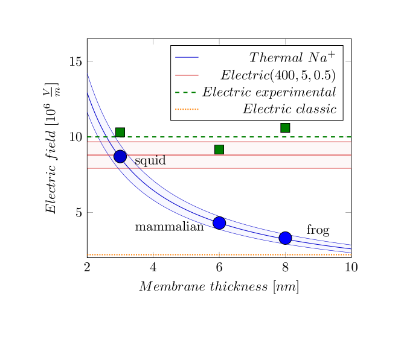

In a segmented electrolyte, electrical charges are typically globally balanced; however, they may become locally unbalanced due to physical factors. The Nernst-Planck electrodiffusion equation in a balanced state
| (1.1) |
describes in one dimension the mutual dependence of the spatial gradients of the electrical and thermodynamic fields on each other. In good textbooks (see, for example, [17], Eq (11.28)), its derivation is exhaustively detailed. In the equation, is the spatial variable across the direction of the changed invasion parameter, is the gas constant, is the Faraday’s constant, is the temperature, the valence of the ion, the potential, and the concentration of the chemical ion. The two sides are the derivatives of the equation
| (1.2) |
known as Nernst equation. In other words, Eq.(1.1) and Eq.(1.2) are the differential and integral formulations of the same knowledge. The limits of the integration are chosen arbitrarily (by choosing the reference concentration ). Hence, the derived potential inherently comprises an additive term (a potential difference), so they must not be compared directly if they use a different reference (furthermore, it is nonsense to combine quantities from the intracellular and extracellular sides additively, whether concentrations, mobilities, or Nernst voltages, as it happens in the Goldman-Hodgkin-Katz (GHK) equation (see section 1.2.3). The derivatives are spatial derivatives; the temporal derivatives (needed for describing the time course) of the concentration(s) and voltage are derived in [13]. In ’ordinary’ physics, where the charge and mass are independent, changing one side changes the other in the opposite direction. In ’non-ordinary’ physics [18], valid for electrolytes, the two differentials must change in the same direction, given that ions’ charge and mass cannot be separated (BTW: this is why Eq. (1.2) results in a negative potential difference). (The derivation in ’ordinary physics’, such as [17], Eq.(11.30), is wrong, at least because of two reasons: the same speed is assumed for mass and charge transport; furthermore, the used partial derivatives are not independent; the details are discussed throughout the paper.)
It is a common fallacy in physiology that the applied potential generates a current. Instead, its gradient () has the effect, where is the distance, for example, between the clamping point and the membrane or the Axon Initial Segment (AIS). We assume that, in a balanced state, the concentrations on the two sides of the membrane are and , respectively; furthermore we assume that
To simplify the math writing, we neglect the change caused by considering the difference (maybe we should apply a near-unity factor); we use the larger concentration value instead. Using the constants and , we can derive the ”equivalent thermodynamic electrical field” for the case of a permeable ion channel in the membrane
| (1.3) |
It does not depend on concentration, but rather is linear in temperature and inversely proportional to membrane thickness (given in ). Furthermore, it is valid separately for all
| (1.4) |
Figure 1.1 depicts the field’s dependence on the membrane’s width and how it compares to the charge-generated electrical field. The figure illustrates the setpoint(see section 1.2.2), the boundaries of the changes, and the interesting phenomena that occur within the shaded cross-section. The figure is an illustration, but its figures are not far from the true ones. For a membrane thickness, it results in , which compares well to the value provided by Eq. (1.18). (Notice that the membrane’s thickness may change during the action potential, see [19]: the rush-in extra charge compresses the membrane. Similarly, the concentration of the electrolyte in proximity to the membrane also changes.) Correspondingly, by using that ,
| (1.5) |

In simple words, the Nernst-Planck equation states that the changes in concentrations of ions create changes in the electrical field (and vice versa), and in a stationary state, they remain unchanged. Notice that in the case of an ion mixture, joint charge-generated electrical fields exist, and they are equal, per ion, to the concentration-generated ”electrical fields”, see section 1.2.1.
In the steady state, some other forces also contribute to the mentioned forces. To discuss how nature restores the steady state when a microscopic change happens in a balanced state of a biological solution, we write the well-known Nernst-Planck equation (see Eq.(1.1)) in a slightly extended form:
| (1.6) |
We multiplied the usual two terms by the elementary charge, so its terms are expressed as forces, plus we added a transport-related external force (its role is discussed below). Furthermore, changing one force triggers a corresponding counterforce and/or causes the ion to move in a viscous fluid. (An excellent summary of the possible biology-related forces is given in [20], with a lot of cited references.) This equation, expressing Newton’s first law, has no place for effects such as ”Pumps that maintain ion gradients …transport ions against their electrical and chemical gradients” [1], page 101. It implies some new force that moves ions, confronting Schrödinger’s science-based opinion: ”And that not on the ground that there is any ‘new force’ or whatnot, directing the behaviour of the single atoms within a living organism”[12]. Biophysics still did not provide either the origin of the ’new force’ or the reason why Newton’s laws are not valid for ions in living matter, which undermines the credibility of those protein-based mechanisms.
Expressed differently
| (1.7) |
That means when describing an ionic transfer process, we must not separate the electrical current from the mass transfer (in other words, to discuss electrical or thermodynamic models in a disciplinary way): they happen simultaneously and mutually trigger each other. Notice that the thermodynamic term is ion-specific while the electrical term is not. To be entirely balanced, the system must be balanced to all elements. This way, changing one concentration implicitly changes all other concentrations and the electrical field.
Notice the special role of the constraint force by the closed volume represented by the membrane’s wall. The thermodynamic contribution also means a pressure from the colliding particles, and the electrical repulsion exerts a force on the membrane’s wall. Those disciplinary forces act simultaneously and inseparably.